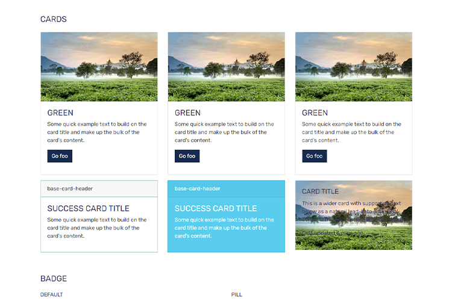
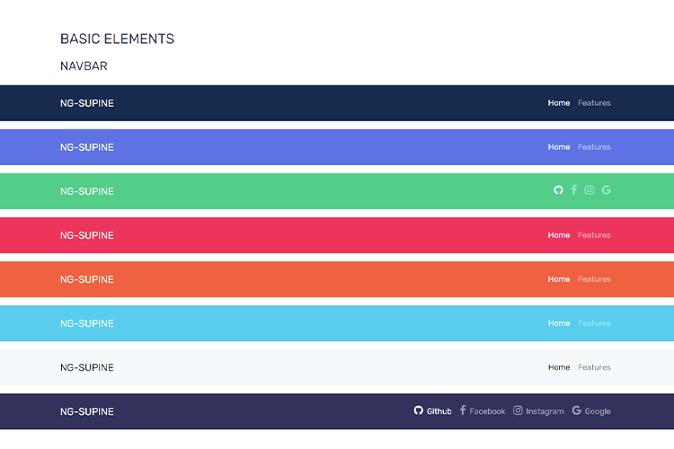

<div class="button">
  <div class="container mt-4">
    <div class="mb-4">
      <h2>Base-Carousel</h2>
      <p>A slideshow component for cycling through elements—images or slides of text—like a carousel.</p>
      <p>Here <code class="bg-light font-fira-code">target</code> is id that we use for bootstrap carousel, same as <code class="bg-light font-fira-code"> base-slide-indicator</code> is indicator.</p>
    </div>
    <div class="mb-5">
      <ul>
        <li><code class="bg-light font-fira-code">&lt;base-carousel>&lt;/base-carousel></code></li>
        <li><code class="bg-light font-fira-code">&lt;base-slide-indicator>&lt;/base-carousel></code></li>
        <li><code class="bg-light font-fira-code">&lt;base-carousel-inner>&lt;/base-carousel></code></li>
        <li><code class="bg-light font-fira-code">&lt;base-carousel-inner>&lt;/base-carousel></code></li>
        <li><code class="bg-light font-fira-code">&lt;base-carousel-indicator>&lt;/base-carousel></code></li>
      </ul>
      <div class="row">
        <div class="col-md-6">
          <base-carousel target="carouselExampleControls">
            <ol class="carousel-indicators" >
              <base-slide-indicator target="carouselExampleControls" index="0"></base-slide-indicator>
              <base-slide-indicator target="carouselExampleControls" index="1"></base-slide-indicator>
              <base-slide-indicator target="carouselExampleControls" index="2"></base-slide-indicator>
            </ol>
            <base-carousel-inner>
              <div class="carousel-item active">
                
              </div>
              <div class="carousel-item">
                
              </div>
              <div class="carousel-item">
                
              </div>
            </base-carousel-inner>
            <base-carousel-indicator slide="next" target="carouselExampleControls"></base-carousel-indicator>
            <base-carousel-indicator slide="prev" target="carouselExampleControls"></base-carousel-indicator>
          </base-carousel>
        </div>
      </div>

      <div class="accordion mt-2" id="accordionExample">
        <div class="card border-0">
          <div class="card-header border-0 pt-2 pb-2 border-bottom d-flex justify-content-center" style="cursor: pointer" id="headingTwo" data-toggle="collapse" data-target="#badgepill" aria-expanded="false" aria-controls="collapseTwo">
            <a class="mb-0 collapsed text-center" style="font-size: 14px;"   >
              Code
            </a>
          </div>
          <div id="badgepill" class="collapse show"  data-parent="#accordionExample">
            <div class="card-body p-0">
                    <pre><code class="language-markup">// pass target, index & slide as Input
&lt;base-carousel target="carouselExampleControls">
  &lt;ol class="carousel-indicators" >
    &lt;base-slide-indicator target="carouselExampleControls" index="0">&lt;/base-slide-indicator>
    &lt;base-slide-indicator target="carouselExampleControls" index="1">&lt;/base-slide-indicator>
    &lt;base-slide-indicator target="carouselExampleControls" index="2">&lt;/base-slide-indicator>
  &lt;/ol>
  &lt;base-carousel-inner>
    &lt;div class="carousel-item active">
      &lt;img src="../../../assets/img/ngsupine-slide1.png" class="d-block w-100" alt="...">
    &lt;/div>
    &lt;div class="carousel-item">
      &lt;img src="../../../assets/img/ngsupine-slide3.png" class="d-block w-100" alt="...">
    &lt;/div>
    &lt;div class="carousel-item">
      &lt;img src="../../../assets/img/ngsupine-slide2.png" class="d-block w-100" alt="...">
    &lt;/div>
  &lt;/base-carousel-inner>
  &lt;base-carousel-indicator slide="next" target="carouselExampleControls">&lt;/base-carousel-indicator>
  &lt;base-carousel-indicator slide="prev" target="carouselExampleControls">&lt;/base-carousel-indicator>
&lt;/base-carousel></code></pre>
            </div>
          </div>
        </div>
      </div>
    </div>

  </div>
</div>
